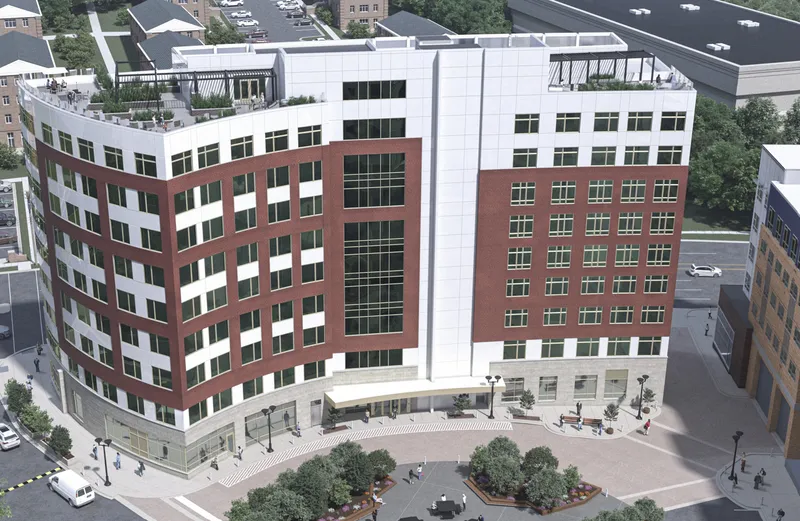

Consultancy
Strategic guidance, early in the project.
Three areas where the right code, accessibility, and feasibility decisions — made before the design is locked in — save the most time and capital.

Senior Living
I help developers and operators make the right code, accessibility, and licensing decisions early in senior living projects — before they become costly constraints.
Key areas of focus
- During Due Diligence: select the right code pathway (R-2, R-4, I-1, I-2)
- Align construction type and cost strategy
- Integrate licensing requirements from the start
- Coordinate accessibility across multiple standards
- Ensure design supports long-term operations and aging-in-place
The result
Reduce redesign, control cost, and preserve flexibility as
the project evolves.
Get in touch
To discuss a project or learn more about these services, contact Access Green Design Group.